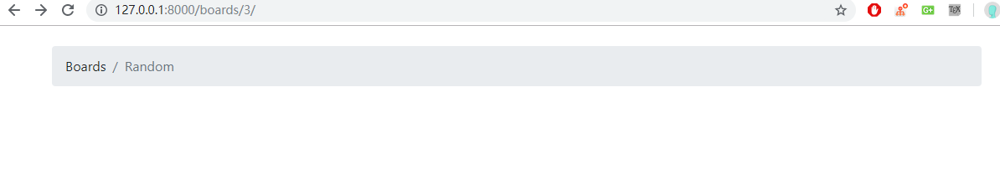
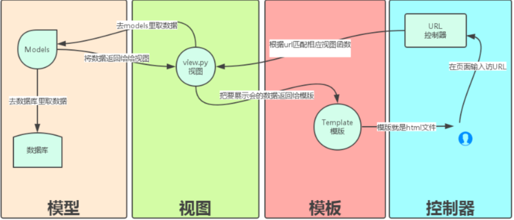
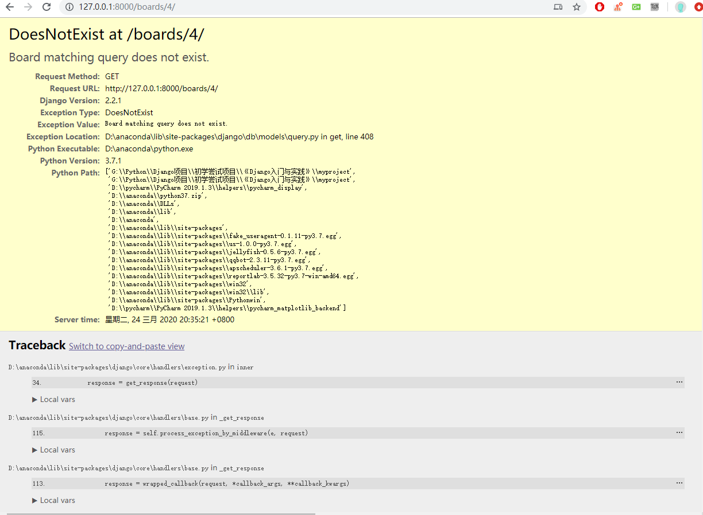
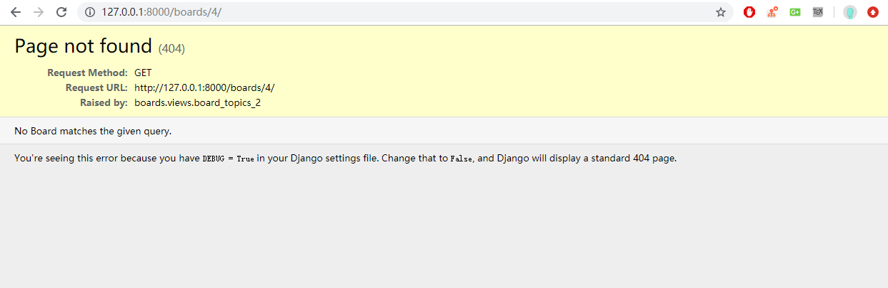
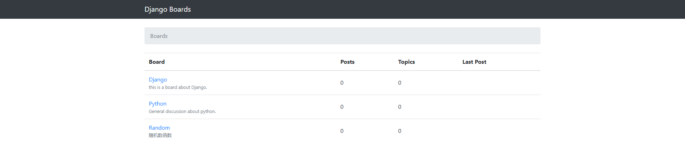
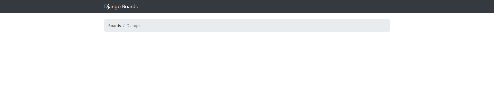
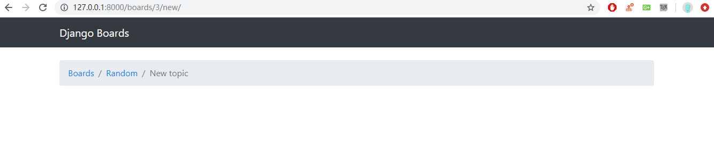
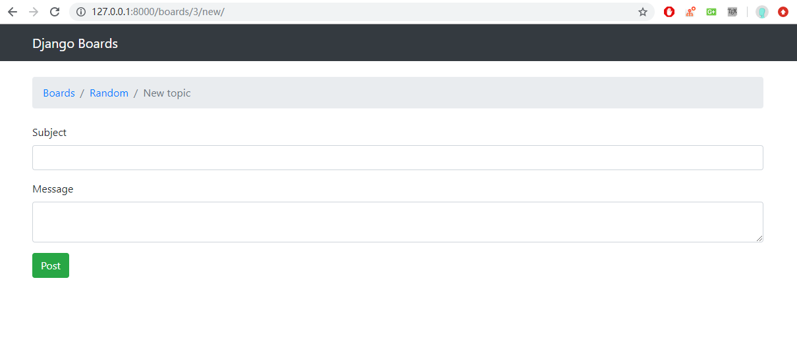

A Complete Beginner`s Guide to Django -- Advanced Concepts
该部分将深入理解两个基本概念：URLS 、Forms 和模板复用 。在这个过程中，我们还将学习其他很多概念，如创建可重用模板和安装第三方库。
URLs
随着项目的开发，我们需要实现一个新的功能，就是列出某个版块下的所有主题列表，再来回顾下，你可以看到 A Complete Beginner`s Guide to Django — Models Fundamentals 中我们画的线框图，我们点击 Django 发现连接后面多了一个 Django ，这种效果是如何实现的呢？

我们看看之前的路由配置
1 | myproject/urls.py |
相较于原本教程，由于 Django 升级了路由语法，在 Django 2.0 开始引入了 django.urls.path，运行使用一种更加简单、可读的路由语法。
path
标准语法：path(route, view, kwargs=None, name=None
route表示路径，从端口以后的 URL 地址到结束view表示 route 匹配成功后，需要调用的视图name表示别名kwargs表示一个字典，传给view 函数
1 | myproject/urls.py |
1 | boards/views.py |
配置好路由和 View 之后，我们来配置下 HTML 文件,在 Teamplate 下新建文件 topics.html
1 | templates/topics.html |
输入网址 ：http://127.0.0.1:8000/boards/3/ 即可访问到下面的页面

原理如下图，当我们在浏览器输入访问链接的时候，会通过 路由配匹配 View 函数，然后通过函数传递参数到 HTML 页面

路由跳转
但是我们的最终目的是可以通过点击不同的主题，跳转到不同的页面。首先我们需要修改首页的 HTML 页面
1 | templates/home.html |
将 board.name 通过 a 标签包裹起来，a 标签内的 href 的内容即通过填充的方法来实现，绑定我们在路由文件中路由链接的 name,我们可以很清晰的看到 myproject/urls.py 需要我们传入一个 pk 值，所以我们在 a 标签中将该主题的 pk 值写在后面。当我们点击该 a 标签时会发生如下操作拼接成合适的 URL。
- 调用 myproject/urls.py 的
path('boards/<int:pk>/',views.board_topics,name='board_topics')路由函数，将 board.pk 值传入链接中，拼接成http://127.0.0.1:8000/boards/1/ - 通过 URL 触发绑定的 view 函数
- 将从数据库请求到的数据渲染到 HTML 文件上，最后反馈到浏览器
get_object_or_404
get_object_or_404 是 django shortcuts 模块里面一个比较简便的方法，主要体现在 django get 操作数据库的时候，可以帮助我们少写一些代码，加快开发速度。
当我们输入的网址是一个错误链接，如果我们在数据库中只有三条信息，但是我们在浏览器输入了 http://127.0.0.1:8000/boards/4/ 查询对象不存在的话会抛出一个 DoesNotExist 的异常

为了更好的用户体验，我们在 view 函数中调用 get_object_or_404 方法，一般需要2个参数
- modelname 即我们需要查询数据库的表名
- *args 要查询的条件是什么
修改如下1
2
3
4def board_topics(request,pk):
# 调用 get_object_or_404 方法
board = get_object_or_404(Board,pk=pk)
return render(request, 'topics.html', {'board': board})
可以对比下上面的报错和下面的提醒

模板复用
到目前为止，我们一直在复制和粘贴 HTML 文档，长远来说是不可行的。接下来我们将重写 HTML 模板，创建一个 master page，其他模板添加它所独特的部分。
在 templates 文件夹中创建一个名为 base.html 的文件1
2
3
4
5
6
7
8
9
10
11
12
13
14
15
16
17
18
19
20
21templates/base.html
{% load static %}
<!DOCTYPE html>
<html>
<head>
<meta charset="utf-8">
<title>{% block title %}Django Boards{% endblock %}</title>
<link rel="stylesheet" href="{% static 'css/bootstrap.min.css' %}">
</head>
<body>
<div class="container">
<ol class="breadcrumb my-4">
{% block breadcrumb %}
{% endblock %}
</ol>
{% block content %}
{% endblock %}
</div>
</body>
</html>
这是我们的母版页。每个我们创建的模板都 extend 这个特殊的模板。现在我们介绍 {% black %}
标签。它用于在模板中保留一个空间，一个 子 模板可以在这个空间内插入代码和 HTML。
在 {% black title %}中我们还设置了一个默认值 Django Boards ，如果我们在子模板中未设置 {% black title %} 的值它就会被使用。现在我们重写之前的两个模板。
1 | <!-- templates/home.html --> |
1 | <!-- templates/topics.html --> |
唯一需要注意的点就是 {{ block.super }} 的使用，这是将继承来的文件的标题在这里再次使用。更新完这两部分的代码之后，我们运行项目会发现没有任何的变化。
接下来我们要为所有的页面都添加上一个菜单块
1 | <!-- templates/base.html --> |


Forms
Forms 用来处理我们的输入。这在任何 Web 应用或者网站中都是很常见的任务。标准的做法是通过 HTML 表单实现，用户输入一些数据，将其提交给服务器，然后服务器处理它。
表单处理是一项非常复杂的任务，因为它涉及到与应用多个层面的交互。有很多需要关心的问题。例如，提交给服务器的所有数据都是字符串的形式，所以在我们使用它之前需要将其转换为需要的数据类型（整型、浮点型，日期等）。我们必须验证有关应用程序业务逻辑的数据。我们还需妥善地清理和审查数据，以避免一些诸如 SQL 注入和 XSS 攻击等安全问题。
好消息是 Django Forms API 使得整个过程变得更加简单，从而实现了大量工作的自动化。而且，最终的结果比大多数程序员自己去实现的代码更加安全。所以不管 HTML 的表单多么简单，总是使用 Form API。
自己实现表单
为了能够更好的掌握表单的内容，虽然我们会使用 Form API ，但是我觉得学习下如何构建 Form 也是不错的事情。
很多问题诸如：该表单要处理两个不同的模型数据：Topic 和 POST ，我们应该只为登录认证过的用户去显示这个页面。这些问题，我们后续都会进行处理
首先，先创建一个新的 URL 路由，命名为 new_topic
1 | myproject/urls.py |
需要写一个相对于的 View 来匹配路由
1 | boards/views.py |
然后我们需要将表单的模板写出来1
2
3
4
5
6
7
8
9
10
11
12
13
14
15
16templates/new_topic.html
{% extends 'base.html' %}
{% block title %}
Start a New Topic
{% endblock %}
{% block breadcrumb %}
<li class="breadcrumb-item"><a href="{% url 'home' %}">Boards</a></li>
<li class="breadcrumb-item"><a href="{% url 'board_topics2' board.pk %}">{{ board.name }}</a></li>
<li class="breadcrumb-item active">New topic</li>
{% endblock %}
{% block content %}
{% endblock %}
我们在浏览器输入下链接 访问下页面

接下来我们就需要将 HTML 页面中创建表单了1
2
3
4
5
6
7
8
9
10
11
12
13
14
15
16
17
18
19
20
21
22
23
24
25
26
27
28
29templates/new_topic.html
{% extends 'base.html' %}
{% block title %}
Start a New Topic
{% endblock %}
{% block breadcrumb %}
<li class="breadcrumb-item"><a href="{% url 'home' %}">Boards</a></li>
<li class="breadcrumb-item"><a href="{% url 'board_topics2' board.pk %}">{{ board.name }}</a></li>
<li class="breadcrumb-item active">New topic</li>
{% endblock %}
{% block content %}
<form method="post">
{% csrf_token %}
<div class="form-group">
<label for="id_subject">Subject</label>
<input type="text" class="form-control" id="id_subject" name="subject">
</div>
<div class="form-group">
<label for="id_message">Message</label>
<textarea class="form-control" id="id_message" name="message" row="10"></textarea>
</div>
<button type="submit" class="btn btn-success">Post</button>
</form>
{% endblock %}

在
Conclusions
- URLs 存在 urls 转 path 的难点，但是页面跳转的过程再一次在开发过程中变得更清晰。URL 复用和 view 的配合使得我们开发多个相同结构、不同内容页面的展示变得更加轻松。
- 模板复用 在将下来的项目中，我甚至只需要写一个基础页面，然后继承，通过不同的 URLs 来查询不同的数据库数据并进行展示即可，这个功能非常的好。我改动主题也只需要改动一处即可。